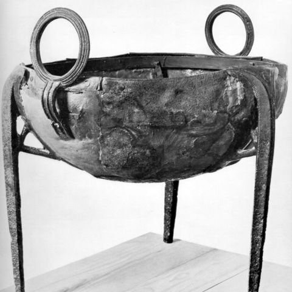
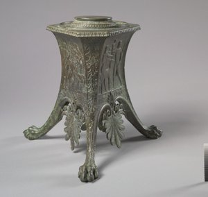
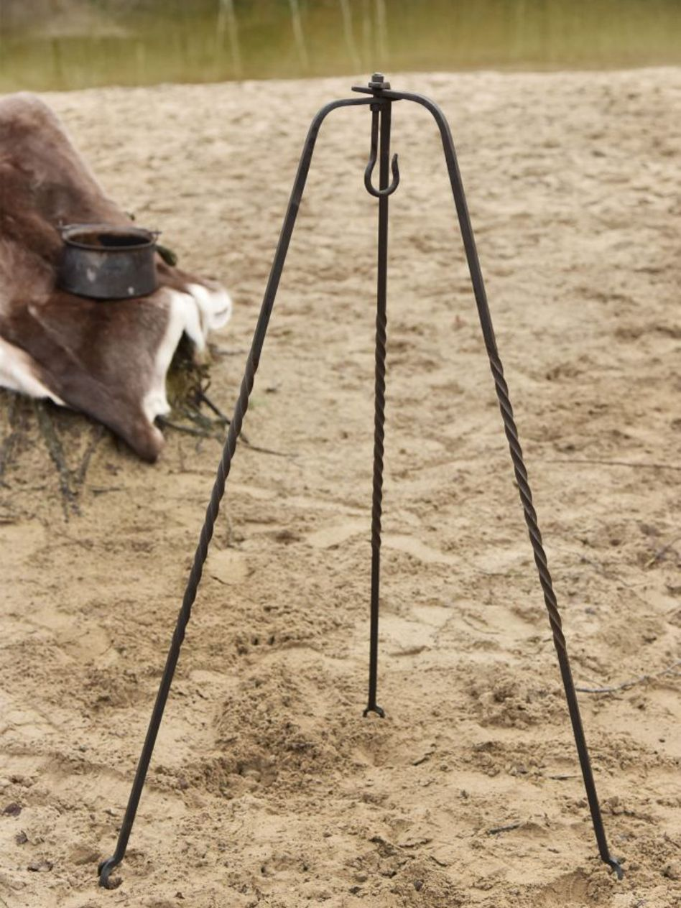
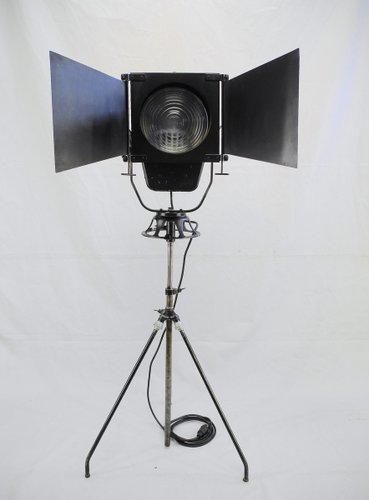
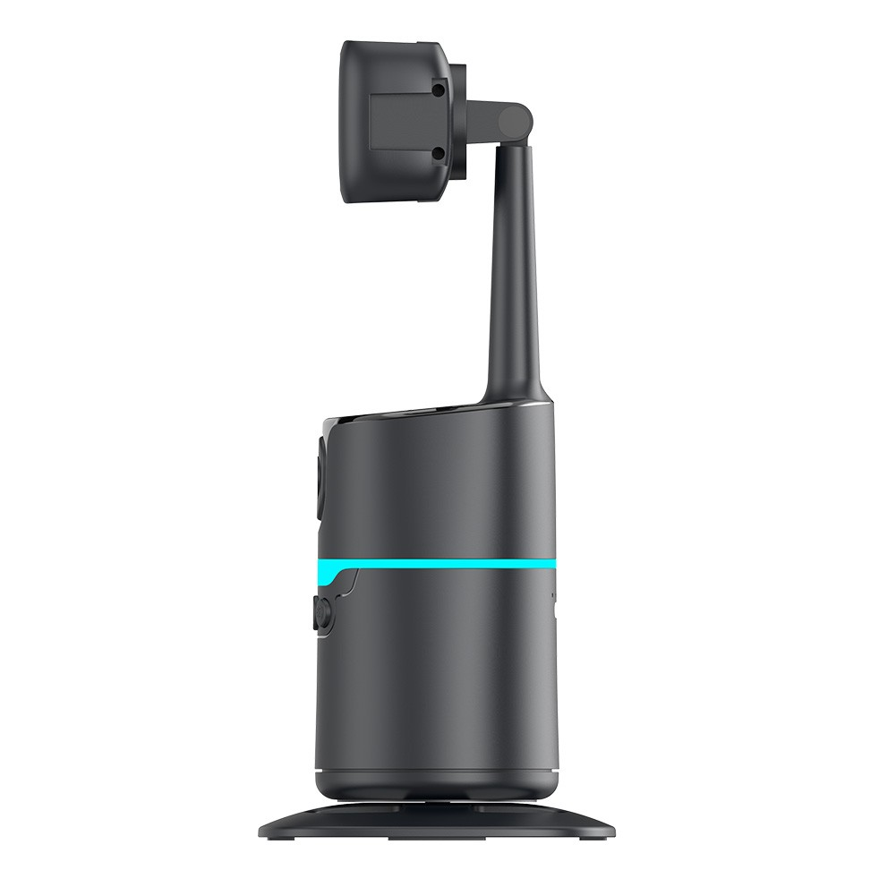

Les Trépieds
En quoi les Trépieds sont des objets indispensables pour le genre humain ?
Dans cette page nous allons présenter les Trépieds et leurs origines.
Sommaire de la page :
Qu'est-ce qu'un trépied ?
Un trépied est un support à trois pieds utilisé comme table, siège ou base pour différents objets. Grâce à ses trois points d'appui, il est toujours stable, même sur un sol irrégulier. Autrefois, il servait notamment à maintenir des récipients au-dessus du feu dans les cheminées. Avec l'apparition des fourneaux, il est devenu moins indispensable pour la cuisine. Aujourd'hui, le trépied est surtout utilisé comme support stable pour des appareils nécessitant de la précision, comme en photographie, en géométrie ou dans certains dispositifs de levage. (source:Wikipédia)

Les avantages 📷
- Stabilité PARFAITE
- Adaptés au surface irrégulières
- Réglable en hauteur
- Léger et transportables
Les différents types de trépieds
| Nom du trépieds | Époque | Image |
|---|---|---|
| Trépied de Delphes | Grèce Antique |  |
| Trépieds domestique romain | Empire romain |  |
| Trépieds d'âtres | Moyen Age |  |
| Trépieds cinématographique | Époque contemporaine |  |
| Trépieds intelligent | Époque numérique |  |